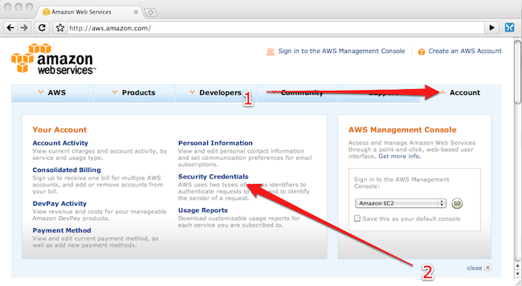
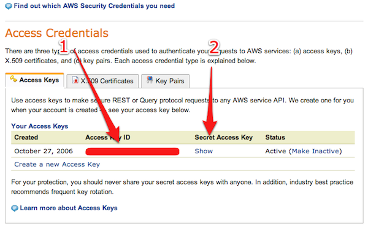
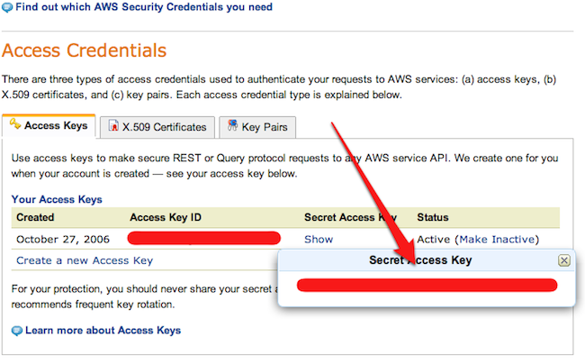

rapp
S3 Backup
Rapid App Deployment allows you to enable daily backups to an Amazon S3 account, for any of your apps, with one single command. All you have to do is run the add_backup command like specified below:
$ wn add_backup Webbynode Rapid App Backup This service will backup a dump of your application Database and the contents of your application folder to a bucket on Amazon S3. If you don't have an Amazon S3 account or if you don't know how to create one, please check our guide on http://guides.webbynode.com/articles/rapidapps/backup.html DISCLAIMER: Backing up to S3 will incur on a charge by Amazon according to the terms of the services contract you accepted when signing up to their services. We do not guarantee the minimum or maximum size of the backup, depending completely on how large is the data your application produces. By entering your credentials below, you are acknowledging and accepting this terms. Enter your Amazon S3 credentials or leave the field empty to abort: AWS key:
In a nutshell what we’re saying is that we’ll install a script on your Webby that will daily update a backup of your application database and source code to a bucket on an Amazon S3 account that you already own.
For more information about Amazon S3, please refer to their guide. If you can’t find the information shown in this guide, please read Amazon documentation and use their support. We won’t respond to any tickets asking for instructions on how to setup a new key, since this is out of the scope of this guide.
Your AWS key and secret can be found visiting http://aws.amazon.com and clicking on Account / Security Credentials:

When the page loads, scroll down a little to the Access Credentials settings. You should see your credentials like below. Take note on your Acces Key ID (1) and then click the link Show (2) under Secret Access Key.

After clicking the Show link, you’ll see your AWS secret:

Carefully copy the key, paste it then copy the secret and paste it, like below. This key will be remembered on the computer you’re using, since it’ll be stored on a file called .webbynode in your home folder.
Webbynode Rapid App Backup This service will backup a dump of your application Database and the contents of your application folder to a bucket on Amazon S3. If you don't have an Amazon S3 account or if you don't know how to create one, please check our guide on http://guides.webbynode.com/articles/rapidapps/backup.html DISCLAIMER: Backing up to S3 will incur on a charge by Amazon according to the terms of the services contract you accepted when signing up to their services. We do not guarantee the minimum or maximum size of the backup, depending completely on how large is the data your application produces. By entering your credentials below, you are acknowledging and accepting this terms. Enter your Amazon S3 credentials or leave the field empty to abort: AWS key: 0123456789ABCDEFGHIJ AWS secret: F3L1P3C0URYw0ntPr0v/d3p4sSw0rDz4tw1ll0k/ [Webbynode] Configuring backup for sampleapp... Adding backup for sampleapp => Configuring backup script with 30 days retention... => Setting up a daily cron job... => Executing first backup... => Done!
Once you finish entering your data, a first backup is executed and a cronjob is executed, so that every night a new backup will be transferred to your S3 account. We’ll store 30 days of history by default but that can be overridden.
Changing the backup retention
In order to change the backup retention days, just use the --retain option, like below:
$ wn add_backup --retain=15 [Webbynode] Configuring backup for sampleapp... Adding backup for sampleapp => Configuring backup script with 15 days retention... => Setting up a daily cron job... => Executing first backup... => Done!
S3 Browsing Tools
If you don’t have a S3 Browing tool already, here are some:
- S3Hub, a free Mac application
- S3Fox, a Firefox add-on
- CloudBerry S3 Explorer Pro, for Windows
- JetS3t, a cross-platform Java application
And more options can be found on this article.
Basic Topics
Advanced Topics